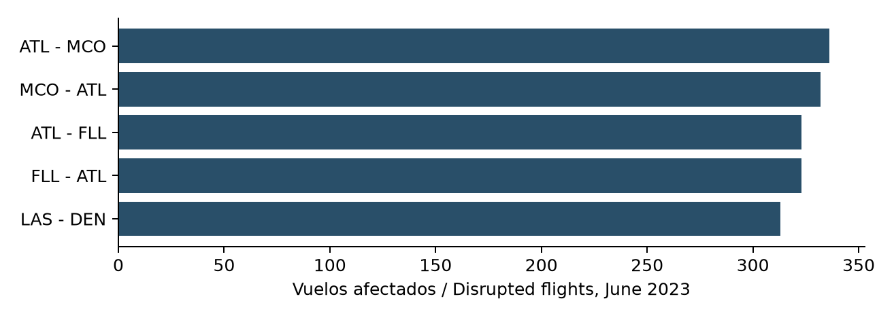

Confiabilidad de rutas aéreasAir route reliability
Revisar primero las conexiones Atlanta y Orlando por volumen de vuelos afectados en junio de 2023. La recomendación es investigar programación y contingencias, sin atribuir causas ni proponer reducciones de capacidad con un solo mes.Review Atlanta-Orlando connections first by disrupted-flight volume in June 2023. Investigate scheduling and contingency handling without attributing causes or recommending capacity reductions from one month.

| Indicador / Metric | Resultado / Result |
|---|---|
| Vuelos programados / Scheduled | 577,262 |
| Cancelaciones / Cancellations | 12,219 |
| Llegadas con retraso / Delayed arrivals | 152,268 / 562,804 |
| ATL a MCO / ATL to MCO | 336 / 738 disrupted |
Alcance y fuenteScope and source
577.262 vuelos reportados por BTS en junio de 2023, en 5.808 rutas direccionales. Se conservan cancelaciones y desvíos. La fuente es pública y oficial; el período es histórico.
577,262 BTS-reported flights in June 2023 across 5,808 directional routes. Cancellations and diversions are retained. The source is public and official; the period is historical.
Método y validaciónMethod and validation
Se adaptó el esquema del archivo oficial, se verificaron claves y completitud de estados, y se separaron denominadores. Retraso significa al menos 15 minutos. La prioridad exige 100 vuelos como mínimo y ordena por cantidad afectada.
The official file schema was mapped, keys and status completeness checked, and denominators separated. Delay means at least 15 minutes. Priority requires at least 100 scheduled flights and ranks by disrupted count.
Siguiente decisiónNext decision
Comparar la persistencia en otros meses y desagregar por día, hora y transportista antes de cambiar programación. Validar restricciones aeroportuarias y conexiones. Reportar simultáneamente volumen, tasa y cobertura de datos.
Check persistence in other months and segment by day, hour and carrier before changing schedules. Validate airport and connection constraints. Report volume, rate and data coverage together.
Límites de la evidenciaEvidence limits
No hay pasajeros ni costos para valorar impacto económico. Un mes no representa desempeño actual. Los intervalos Wilson son orientativos y no capturan eventos comunes como clima. Los relojes locales no se restan para inferir duración entre zonas horarias.
Passenger counts and costs are unavailable for economic valuation. One month does not represent current performance. Wilson intervals are descriptive guides and do not capture common weather shocks. Local clocks are not subtracted across time zones to infer durations.